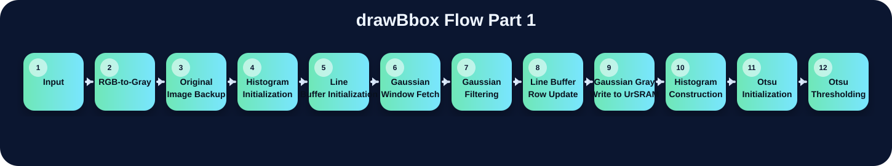
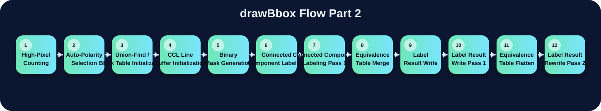
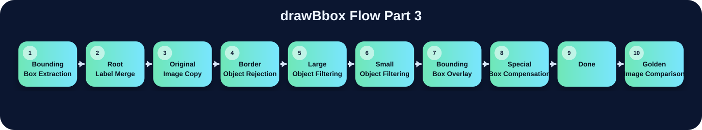

本版已把「比較的方法.docx」中的三個版本流程對照、state/module 關係與前面版本差異完整加入多網頁中。每個流程頁面下方都有三個下拉式程式碼區塊與一段三版本比較說明；中文說明放在 code 區塊上方，原始 Verilog code 不改寫、不插入註解；若該流程在某份檔案沒有明確對應，該區塊保持空白。



讀取原始 RGB 影像資料，是整個 drawBbox pipeline 的起點。
02將 RGB pixel 轉換為灰階值，作為後續 Gaussian、Otsu 與 CCL 的基礎。
03保留原始 RGB 影像，讓最後 bbox 可以直接畫在原圖上。
04清空 histogram，避免舊影像的灰階統計污染新影像。
05建立或載入 Gaussian 所需的影像列資料。
06取得 Gaussian 需要的 3×3 鄰近像素視窗。
07使用 3×3 Gaussian kernel 平滑影像。
08每處理完一列後更新 line buffer 或 selector。
09將 Gaussian 後的灰階結果暫存到 UrSRAM。
10累加灰階分布，提供 Otsu threshold 計算使用。
11初始化 Otsu 門檻計算的累加器與比較變數。
12掃描 threshold candidate 並找出最佳分割門檻。
13統計高於 threshold 的像素數量。
14判斷是否需要反相 foreground/background。
15初始化 CCL 與 bbox 相關資料表。
16初始化 CCL 階段所需的 line buffer。
17根據 threshold 與 polarity 產生 binary foreground mask。
18將相連的 foreground pixels 標成同一個 component。
19第一階段 CCL，產生 provisional labels。
20合併不同 provisional labels 的等價關係。
21將 label result 寫入 AnsSRAM 或 label map。
22將第一階段 provisional label 寫入記憶體。
23將 equivalence table 壓平成 root label。
24第二階段將 provisional label 轉成 root label。
25計算每個 component 的 xmin、xmax、ymin、ymax。
26將非 root label 的 bbox 合併回 root label。
27複製原始 RGB 影像作為最後輸出底圖。
28排除碰到邊界的 component。
29只保留足夠大的 bbox。
30排除過小或疑似雜訊的物件。
31把有效 bbox 畫成綠色邊界。
32針對特定 pattern 或特定條件額外補框。
33RTL 完成處理並拉高 done 訊號。
34testbench 在 done 後比對輸出與 golden image。